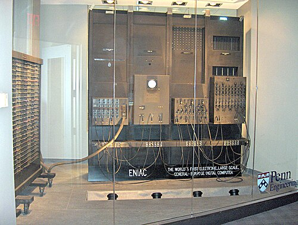
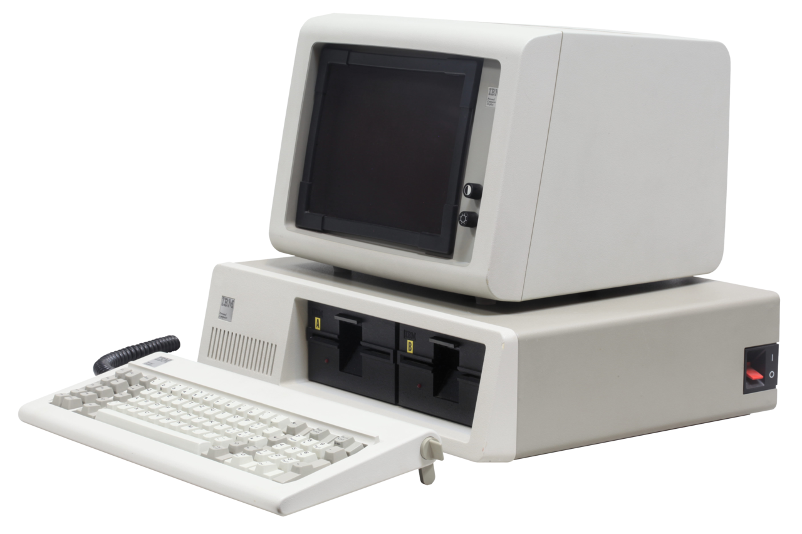
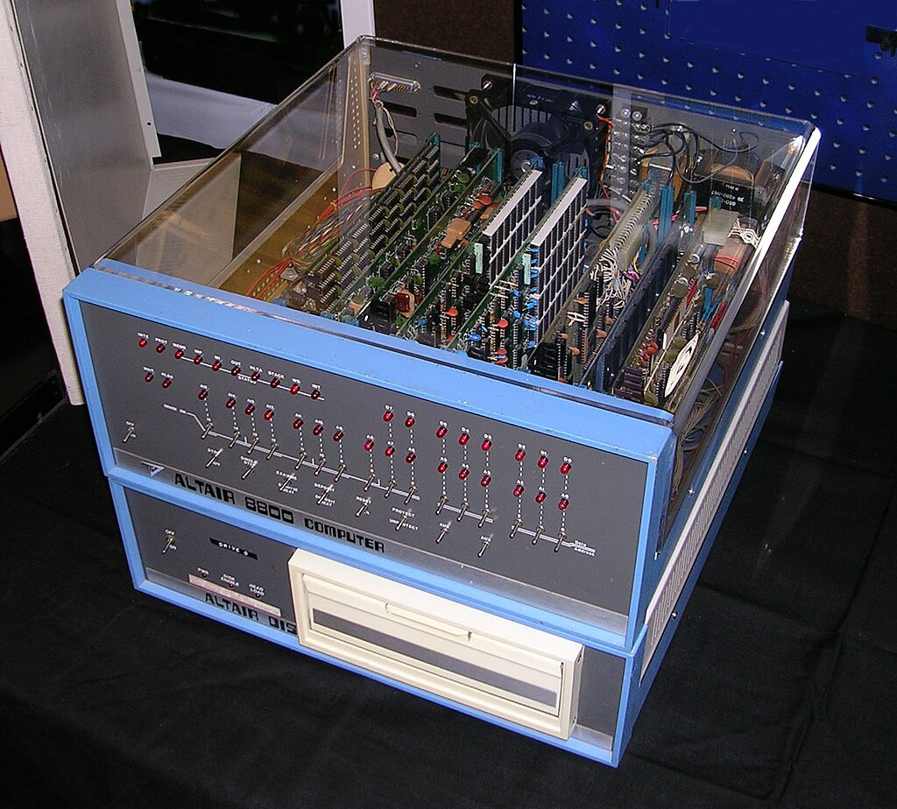

Sejarah Komputer dalam Foto

ENIAC – Komputer Elektronik Pertama (1945)
ENIAC adalah salah satu komputer elektronik pertama yang digunakan untuk keperluan militer AS.
Lihat sumber →

IBM PC 5150 (1981)
IBM PC 5150 adalah komputer personal yang merintis penggunaan PC secara massal di rumah dan kantor.
Lihat sumber →Apple I oleh Steve Jobs & Wozniak (1976)
Apple I adalah salah satu komputer pertama yang dijual sebagai unit lengkap dan siap pakai.
Lihat sumber →

Altair 8800 (1975)
Altair 8800 disebut-sebut sebagai awal revolusi komputer personal yang menginspirasi Bill Gates.
Lihat sumber →